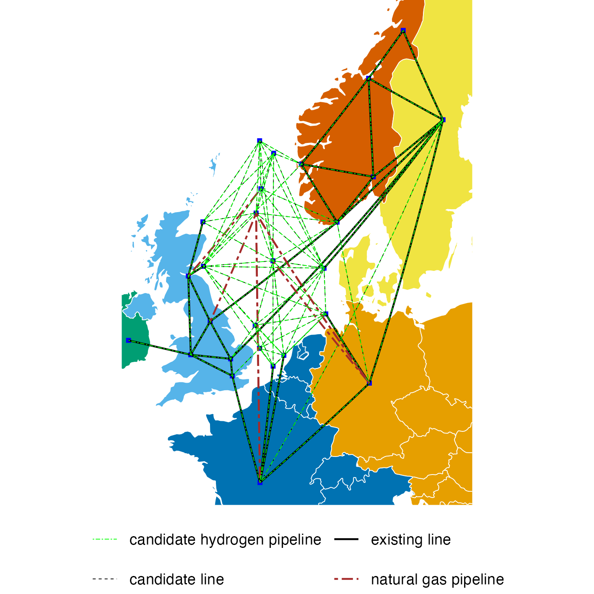
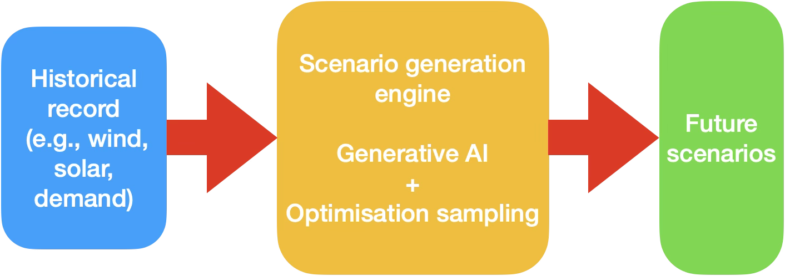

Managing uncertaintyin energy system decisions.
Invest with every likely future in view.
- Test investment, retrofit and retirement decisions against thousands of possible futures for prices, demand and policy.
- See which choices keep their value when conditions change, and how much risk each one carries.
- Get the evidence your board and lenders will ask for with every recommendation.
Keep the lights on when the weather won't cooperate.
- Plan operations across many possible outcomes for wind, solar and demand, instead of a single forecast.
- Get schedules and reserve levels that stay reliable across the range of likely conditions.
- Avoid paying for more backup than you need.
Price outlooks that show the range, not just one line.
- Long-term power price outlooks for Europe, across fuel price, policy and new-build scenarios.
- See the likely range for each outlook and what drives it.
- Explain the numbers and stress-test your positions.
Nobody knows tomorrow's prices, weather or demand.
Uncertainty is not knowing how things will turn out. A forecast gives one answer, but many futures are possible. We call each one a scenario.
- energy demand
- wind and solar output
- fuel prices
- government policy
A decision built on one forecast can fail.
It only works if that forecast comes true. Testing a decision against many scenarios shows whether it still holds when things turn out differently.
See it in a small exampleShould you buy a battery?
The average misses the value of adapting.
Planning for many possible futures like this is called stochastic optimization.
Illustrative prices in pounds. Storage starts empty, with no energy losses or extra charges. £1,000 is an average; the low-price case loses £2,000. *For simplicity, we omit the fee for the fixed-price sale.
We make stochastic modeling an effortless part of your workflow
Uncertainty becomes an input to every plan, rather than a caveat added at the end.
Decision intelligence
Using data and models to make better decisions. We apply it to plans that must hold up across many possible futures.
User-friendly interface
Set up models, run scenarios and read results without writing code.
Fits your existing tools
Connects to the data and software your team already relies on.
One platform, from scenarios to decisions.
Advanced optimisation methods with explicit representations of uncertainty — operating at scale across energy carriers, geographic regions and decision timescales.
Multi-energy, multi-scale modelling
Pan-European scope. Power, heat, hydrogen, oil & gas and CCS in one integrated model.

Algorithms beyond solver limits
Proprietary optimisation and neural-network-enhanced algorithms solve problems commercial solvers can't.
Scenario generation
Data-driven and optimisation-based scenarios, from historical data to user-defined futures.

A user-focused platform
Integrated data management, model configuration and results analysis — built for analysts and decision-makers.
Data analytics
- Time series scenario generation
- Long-term commodity, policy, and technology scenario generation
- European energy system database
Algorithms
A toolbox of fast optimisation-based algorithms
Models
- Long-term and short-term uncertainty
- Integrated investment, retrofit and abandonment planning with operational scheduling
- Pan-European multi-energy system: power, oil and natural gas, hydrogen
- North Sea offshore system: offshore wind, O&G platforms, pipelines
Results analytics
- Long-term power prices analytics
- Energy infrastructure pathways analysis
- Energy asset valuation
- Uncertainty analytics
See your energy systemunder uncertainty.
Get a walkthrough of the EORC platform on a problem that looks like yours.